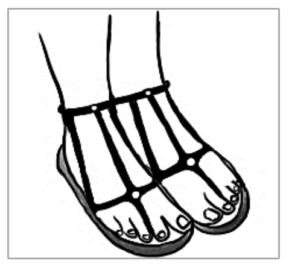

先讀文章、作答下方的題目，再展開最後的「看答案、依據句與逐段中譯」。也可以到互動練習線上作答，交卷後自動批改。
第 1 段The flip-flop is the simplest shoe on the planet. It consists of a piece of rubber, plastic, leather, or woven material in the outline of a foot, with a strap holding the sandal to a wearer’s toes. The name comes from the sound the sandals make when they slap the walking feet.
第 2 段The earliest record of people wearing the flip-flop comes from Egypt, but many ancient cultures had their own variants of the footwear. In the Greek version, the toe strap ran between the first and second toes, while Roman sandals had the strap between the second and third toes. The Mesopotamians wore the strap between the third and fourth toes. In India, “toe knob” sandals had a knob between the first and second toes.
第 3 段Modern flip-flops derive from Japanese zōris, which were often worn with socks dividing the big toe from the rest, and were typically made of rice straw. During World War II, Japan seized much of Southeast Asia’s rubber. In 1945, devastated from the war, the country set about establishing a cheap industry that could rebuild its economy. The Japanese used their rubber reserves from the war to mass-produce the simplest Japanese footwear. Rubber thus replaced rice straw as the major material for the flip-flop.
第 4 段In the 1950s, flip-flops became popular in the United States as soldiers returning from occupied Japan brought zōris home. The sandals have subsequently undergone redesign, often appearing in bright colors in line with Californian beach culture. They have remained popular due to their convenience, and are often worn with bathing suits or summer clothing. Some people also wear dressy versions for more formal occasions.
第 5 段Despite their popularity, flip-flops provoke some questions. Their simple design is responsible for many foot injuries. Another issue is the suitability of exposing feet on the street and places other than the beach. But even more serious is their environmental impact: Millions of plastic discards end up in landfills or the ocean, releasing chemicals and at the same time taking centuries to decompose.
35.Which culture most likely created the sandals shown in the picture?

36.Why is the footwear discussed in the passage called “flip-flop”?
37.Which of the following is true about the modern development of the flip-flop?
38.Which of the following is NOT mentioned as a concern of wearing the flip-flop?
| 題號 | 官方答案 | 答對率 | 鑑別度 |
|---|---|---|---|
| 35 | (D) | — | — |
| 36 | (A) | — | — |
| 37 | (D) | — | — |
| 38 | (B) | — | — |
答對率：本卷非正式施測，無答對率
第 2 段In the Greek version, the toe strap ran between the first and second toes, while Roman sandals had the strap between the second and third toes.
第 1 段The name comes from the sound the sandals make when they slap the walking feet.
第 3 段Modern flip-flops derive from Japanese zōris
第 4 段In the 1950s, flip-flops became popular in the United States as soldiers returning from occupied Japan brought zōris home.
第 5 段Their simple design is responsible for many foot injuries.
第 5 段Another issue is the suitability of exposing feet on the street and places other than the beach.
第 5 段Millions of plastic discards end up in landfills or the ocean, releasing chemicals and at the same time taking centuries to decompose.
第 1 段人字拖是世界上最簡單的鞋子，用一片橡膠、塑膠、皮革或編織材料做成腳的形狀，再用一條帶子把鞋固定在腳趾上。英文名稱 flip-flop 來自走路時鞋子拍打腳底的聲音。
第 2 段最早有人穿人字拖的紀錄來自埃及，不過許多古文明都有自己的版本。希臘式的腳趾帶穿過大拇趾和第二趾之間，羅馬涼鞋的帶子則在第二趾和第三趾之間，美索不達米亞人的帶子在第三趾和第四趾之間。印度則有一種「趾鈕」涼鞋，大拇趾和第二趾之間有一個圓鈕。
第 3 段現代的人字拖源自日本的草履。草履通常用稻草編成，常搭配把大拇趾和其他腳趾分開的襪子來穿。二次世界大戰期間，日本奪取了東南亞大部分的橡膠。1945 年，飽受戰爭摧殘的日本著手建立低成本的產業來重建經濟，用戰時囤積的橡膠大量生產這種最簡單的日本鞋子。於是橡膠取代稻草，成為人字拖的主要材料。
第 4 段1950 年代，從美軍占領下的日本返國的士兵把草履帶回家，人字拖便在美國流行起來。此後這種涼鞋經過重新設計，常以鮮豔的顏色出現，和加州的海灘文化相互呼應。人字拖穿脫方便，所以一直很受歡迎，常搭配泳裝或夏季服裝；也有人在比較正式的場合穿講究一點的款式。
第 5 段人字拖雖然受歡迎，也引發一些問題。人字拖的設計太簡單，許多腳傷都是這樣造成的。另一個問題是，在街上和海灘以外的地方露出雙腳是否合宜。不過更嚴重的是人字拖對環境的衝擊：數以百萬計的廢棄塑膠拖鞋最後進了垃圾掩埋場或海洋，不但釋放化學物質，還要好幾百年才能分解。
第 1 段The flip-flop is the simplest shoe on the planet.
第 2 段The earliest record of people wearing the flip-flop comes from Egypt, but many ancient cultures had their own variants of the footwear.
第 3 段Modern flip-flops derive from Japanese zōris, which were often worn with socks dividing the big toe from the rest, and were typically made of rice straw.
第 4 段In the 1950s, flip-flops became popular in the United States as soldiers returning from occupied Japan brought zōris home.
第 5 段Despite their popularity, flip-flops provoke some questions.